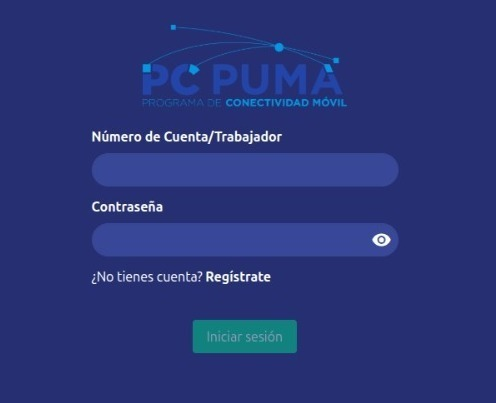
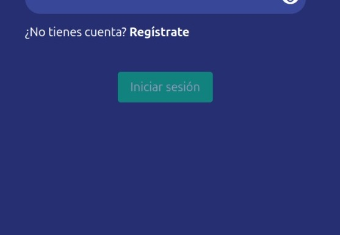
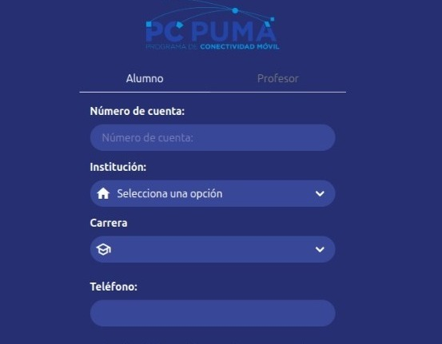
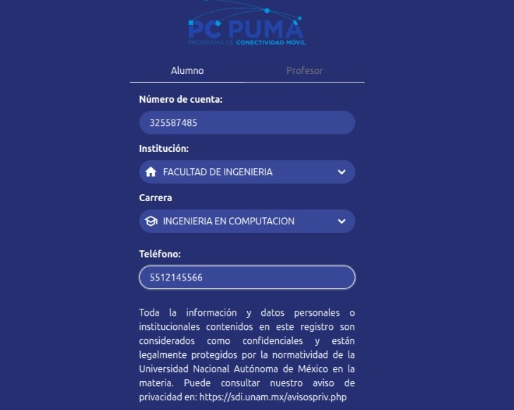
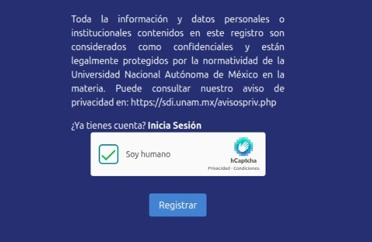
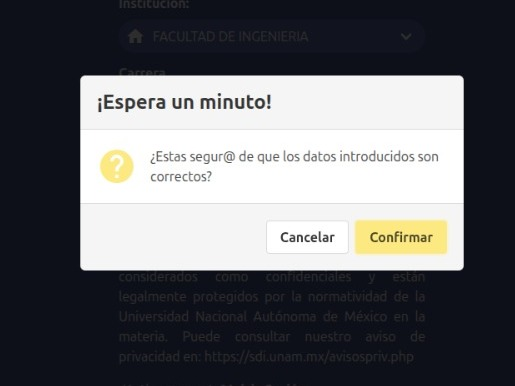
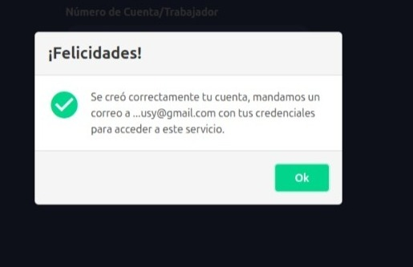
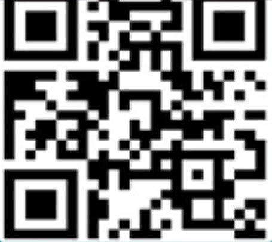

Registro PC PUMA
REGÍSTRATE EN QUIOSCOS PC PUMA
PARA PRÉSTAMO DE LAPTOPS
¿QUÉ ES UN QUIOSCO PC PUMA?
Es un espacio donde puedes solicitar y utilizar equipos laptop, mesas para trabajos colaborativos o PC, para uso de actividades académicas.
INGRESA A LA PÁGINA DE PC PUMA
Accede a PC PUMA, a través de estas páginas:

SELECCIONA "REGISTRATE"
Haz clic en el botón "Regístrate" que se muestra en pantalla, ya sea en tu computadora o teléfono celular.

ELIGE EL TIPO DE USUARIO
Elige tu tipo de usuario: alumno o profesor, para que puedas proporcionar la información correspondiente a tu tipo de usuario.

INGRESA LOS DATOS SOLICITADOS
Ingresa todos tus datos, asegurándote de pertenecer a la Facultad de Ingeniería y considerando que toda la información registrada es confidencial.

COMPLETA EL RECAPTCHA
Completa el ReCaptcha con atención, para garantizar la autenticidad de tu registro.

CONFIRMA EL REGISTRO
Verifica que tus datos sean los correctos y finalmente confirma tu registro.

CHECA TU CONTRASEÑA
Revisa tu correo para encontrar la contraseña que se te ha enviado. Si no está en tu bandeja de entrada, asegúrate de revisar la carpeta de spam.
¡Enhorabuena! Has completado tu registro en PC PUMA.

Si experimentas algún error o duda durante el registro, por favor, dirigete a algún módulo de los Quioscos PC PUMA para recibir las indicaciones correspondientes.
Contacto: pcpuma@fi-b.unam.mx
